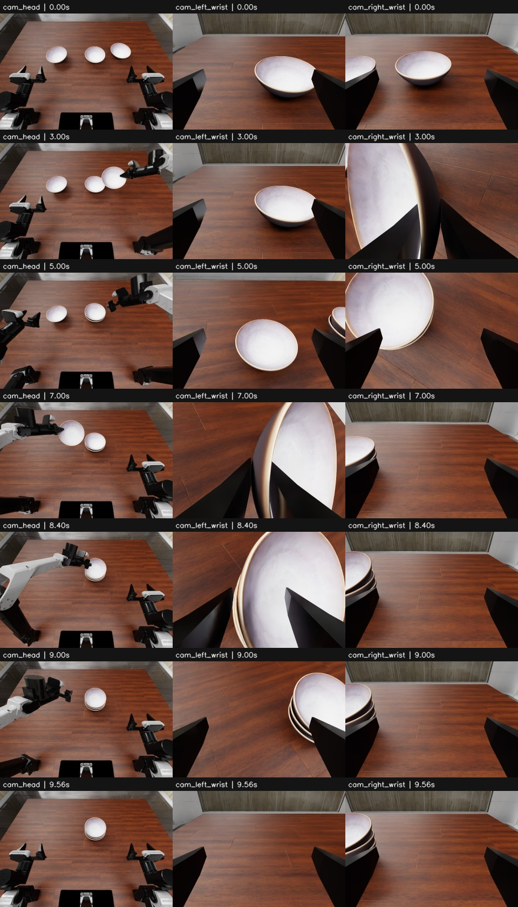

2.1 RoboDojo · Stack Bowls 叠碗 单 episode 诊断
来源是 RoboDojo 官方项目及其 公开数据集中的 stack_bowls / arx_x5 / episode_0000000。原示范依次将右、左两侧的碗搬到中间碗上。这里回放的是官方仿真示范，不是实机测量轨迹。
先看原示范与模拟结果
三段视频使用相同时间轴，均展示 0–9.56 s 的录制时间范围。模拟画面由已记录的原生物体状态回放生成；只显示分离夹爪和共同碰撞几何，未显示完整机器人手臂，也未复刻纹理。
实验设计
- 输入固定：相同初始布局、25 Hz 机器人／夹爪记录、相同插值与控制映射；1 ms 积分步长，9.56 s 原记录后追加 1 s 观察尾段。
- 物体固定：三只相同的 0.35 kg 碗，共同质量／惯量与摩擦系数
μ=0.6；每碗使用同一套 64-piece CoACD 几何。初始布局和碗型号依据首帧形状估计，物体身份未获精确确认。 - 夹爪固定：官方碰撞 hull、滑动关节及 0–44 mm 限位；官方命令映射和 PD 参数。机器人手臂由分离夹爪基座伺服替代。
- 比较范围：同一 episode、各一次完整轨迹。比较物体运动、模拟内部一致性和最终可见结果；不据此报告多任务成功率或速度性能排名。
关键限制：公开 HDF5 有机器人状态／动作、三路 RGB 和相机标定，没有逐帧碗位姿真值。视觉恢复的位姿只能作为带不确定度的 estimated reference。
五步调试与参数冻结
记录中可核实的过程分为以下五步；它们是复现与核验步骤，不等同于每个引擎搜索五套接触参数。
- 核对数据和首帧。固定源数据 revision，确认时间轴和相机坐标；按首帧轮廓拟合初始场景，不用模拟终态反推布局。
- 统一几何与惯量。建立共同凸分解，检查碗腔没有被填实；两引擎使用同一几何、质量和惯量。
- 修正夹爪模型与控制。早期独立手指模型只能抬起约 2 cm。核对命令语义后，改为官方滑动关节和驱动；两个碰撞后端都可抬起约 12–15 cm。
- 更新并对照碰撞后端。同步本地 SAP Internal，启用
collision/newton_convex/，在固定 r3 场景下对照 legacy；通过无物体驱动和主机／CUDA graph 接触轨迹核验。 - 冻结设置，统一评估。保留各引擎的原生接触参数，不以末尾速度最小挑选“最好”配置。用相同释放后窗口处理已有轨迹，缺少的参考位姿和接触连续性留空。
冻结参数：如何确定、实际用了什么
驱动参数来自官方夹爪配置及无物体跟踪核验；接触参数保留当前原生设置，未做物理等效刚度／阻尼标定，也未进行等预算五候选择优。
- 夹指：
Kp=2300 N/m、Kd=100 N·s/m、力上限100 N；关节范围[0, 0.044] m。 - 共同基座伺服：平移刚度
20000 N/m、转动刚度20 N·m/rad；力／力矩上限200 N / 20 N·m。 - MuJoCo：
solref=(0.02, 1)，solimp=(0.9, 0.95, 0.001, 0.5, 2)，100 iterations，tolerance1e−8。 - SAP：shape
ke=2500 N/m、τ=0.01 s、原生 shape gap0.1 m；gap 是接触激活范围，不是实际穿透量。相同两形状合成的 pairke=1250 N/m、τ=0.02 s。Newton Convex 后端显式启用。
这些数值不是跨引擎等价的材料常数，因此不能把阻尼更强或速度更小直接解释成物理更准确。
结果：能区分内部行为，尚不能区分复刻精度
Post-release settling：共同窗口 9.06–9.56 s，每碗 51 个状态样本，间隔 10 ms。RMS 对速度向量模长平方做时间积分，不是分量 RMS 的平均。
| 指标 | MuJoCo | SAP + Newton |
|---|---|---|
| 上层碗线速度 RMS（mm/s） | 0.9804 | 0.0687 |
| 中层碗线速度 RMS（mm/s） | 0.3269 | 0.0540 |
| 底层碗线速度 RMS（mm/s） | 0.0342 | 0.0298 |
| 上层碗角速度 RMS（rad/s） | 0.01995 | 0.00108 |
| 上层碗 0.5 s 净漂移（mm） | 0.4894 | 0.0290 |
SAP 在这个窗口内更静，MuJoCo 有小幅缓慢漂移。但如果原示范也有滑动，更早停住并不一定更忠实；本项不能独立给引擎排名。
Geometric validity：使用相同的共同几何顶点采样方法，仅检查 t=10.56 s 的末态，每碗采样 1024 个顶点。
| 末态采样穿透下界（mm） | MuJoCo | SAP + Newton |
|---|---|---|
| 底层／中层碗 | 0.0540 | 1.5766 |
| 上层／中层碗 | 0.0305 | 0.4658 |
| 所有已检查物体对的最大值（含桌面） | 0.0895 | 1.5766 |
这是末帧的采样下界，不是精确穿透，也不是全程最大穿透。共同几何为近似表示；局部壁厚与穿墙检查尚未完成，因此暂不将这些值换算成“有效／无效成功”。
| 评价层 | 现有证据 | 当前结论 |
|---|---|---|
| Physical Fidelity | 检查过头部关键帧及 7 个时刻的三视角图，但未形成带不确定度的可靠三维位姿估计；有效参考覆盖 0/720 物体帧，最终 0/3。 | trajectory / final-pose reference error 未评估。不是零误差，也不表示所有视频帧都不可恢复。 |
| Contact continuity | 当前成对比较缺少按物体对的有效接触时间序列。 | 未评估；不以总接触点数代替。 |
| Task Outcome | 参考和两引擎的视频观察均为释放后保持三碗叠放。 | 视觉 outcome agreement 一致；严格 valid success、false success / false failure 暂不判定。 |
如实结论：这个 episode 对两个模拟器的宏观任务结果区分度有限。已有指标显示“SAP 更静、MuJoCo 末态采样重叠更少”，没有足够参考证据判断谁的轨迹复刻更好，也没有多 episode 的成功率结论。
来源、协议与结果文件
数据 revision：1127bda94f172d757386945af3eb3a6754d1a4e6。机器人／夹爪配置参考 RoboDojo 代码 revision fbfbbcb3801397fa00dcffaef3ca64d97c3fe76f。官方数据和示范视频来源：RoboDojo-Benchmark，数据集标注 Apache-2.0；本页模拟回放及指标由本实验生成。
参考视频可观测性检查
上层碗和部分搬运过程可见，有估计位置／轴线的潜力；叠放后的下层碗遮挡明显。可见性审查未把遮挡位姿补成可靠参考。
